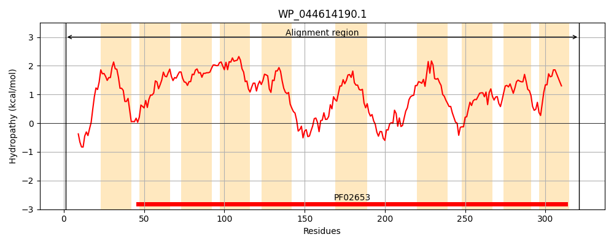
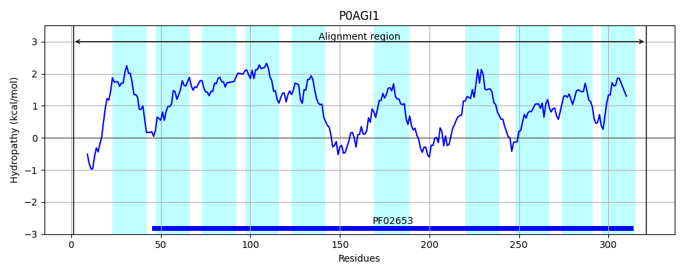
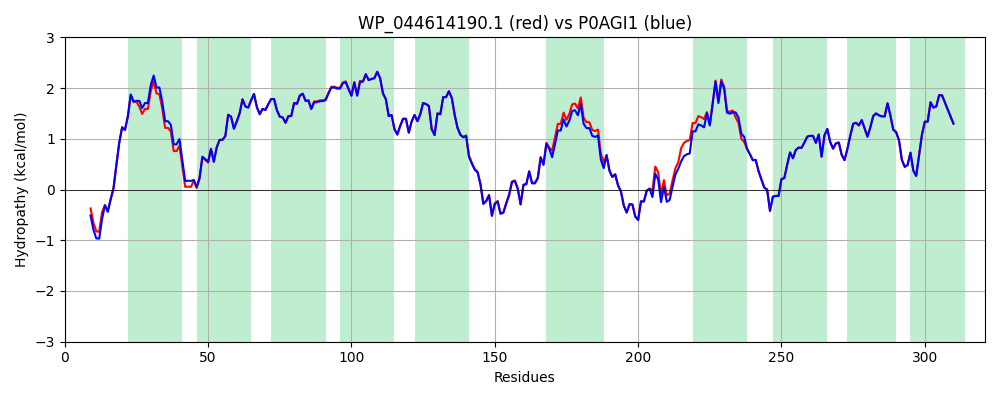

Hit Accession: P0AGI1
Hit TCID: 3.A.1.2.1
Hit Description: gnl|BL_ORD_ID|8865 gnl|TC-DB|P0AGI1|3.A.1.2.1 Ribose transport system permease protein rbsC - Escherichia coli.
Mach Len: 321
e:0.000000
Query TMS Count : 10
Hit TMS Count: 10
TMS-Overlap Score: 9.950000
Predicted Substrates:CHEBI:10410;beta-D-ribopyranose
BLAST Alignment:
Score: 1529 , Bit scores: 593 bits, E-value: 0.0e+00, Alignment length: 321, Percentage identity: 95
Query: 1 MTTQAVTGRRYFTKAWLMEQKSLIALLVLIAVVSTMSPNFFTVNNLFNILQQTSVNAIMAVGMTLVILTSGIDLSVGSLLALTGAVAASIVGIEINALVAVAAALALGAAIGAVTGVIVAKGRVQAFIATLVMMLLLRGVTMVYTNGSPINTGFSDNADLFGWFGIGRPLGIPTPVWIMAIVFLAAWYMLHHTRLGRYIYALGGNEAATRLSGISVNKVKIIVYALCGMLASLAGIIEVARLSSAQPTAGTGYELDAIAAVVLGGTSLAGGKGRIVGTLIGALILGFLNNGLNLLGVSSYYQMIVKAVVILLAVLVDNKKQ 321
MTTQ V+GRRYFTKAWLMEQKSLIALLVLIA+VST+SPNFFT+NNLFNILQQTSVNAIMAVGMTLVILTSGIDLSVGSLLALTGAVAASIVGIE+NALVAVAAALALGAAIGAVTGVIVAKGRVQAFIATLVMMLLLRGVTMVYTNGSP+NTGF++NADLFGWFGIGRPLG+PTPVWIM IVFLAAWYMLHHTRLGRYIYALGGNEAATRLSGI+VNK+KIIVY+LCG+LASLAGIIEVARLSSAQPTAGTGYELDAIAAVVLGGTSLAGGKGRIVGTLIGALILGFLNNGLNLLGVSSYYQMIVKAVVILLAVLVDNKKQ
Sbjct: 1 MTTQTVSGRRYFTKAWLMEQKSLIALLVLIAIVSTLSPNFFTINNLFNILQQTSVNAIMAVGMTLVILTSGIDLSVGSLLALTGAVAASIVGIEVNALVAVAAALALGAAIGAVTGVIVAKGRVQAFIATLVMMLLLRGVTMVYTNGSPVNTGFTENADLFGWFGIGRPLGVPTPVWIMGIVFLAAWYMLHHTRLGRYIYALGGNEAATRLSGINVNKIKIIVYSLCGLLASLAGIIEVARLSSAQPTAGTGYELDAIAAVVLGGTSLAGGKGRIVGTLIGALILGFLNNGLNLLGVSSYYQMIVKAVVILLAVLVDNKKQ 321 | Protein Hydropathy Plots: |
|---|
|  |  |
Pairwise Alignment-Hydropathy Plot:
|
|---|
|  |